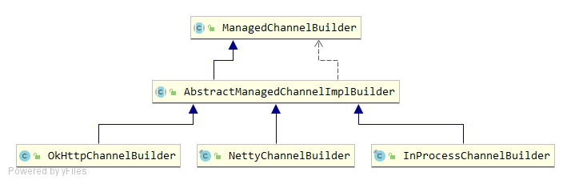

GRPCChannelManager Skywalking Agent会定期将收集到的数据发送到后端的OAP集群，GRPCChannelManager就负责维护Agent与OAP集群之间通信的网络连接。
Agent与OAP之间是采用gRPC进行通信的，在gRPC中有两个重要的组件：
ManagedChannel：是gRPC客户端的核心类之一，它表示一个通信通道，底层持有一个TCP连接，并负责维护此连接的活性。在RPC调用的任何时机，如果检测到底层连接处于关闭状态，它会重新尝试建立连接。通常情况下，我们不需要在RPC调用结束后关闭连接，该连接可以一直重用，直到应用程序关闭。ManagedChannelBuilder：负责创建客户端Channel，常用的ManagedChannelBuilder有三种，NettyChannelBuilder、OkHttpChannelBuilder、InProcessChannelBuilder，Skywalking Agent中使用的是NettyChannelBuilder，底层是基于Netty实现的。

Skywaling在ManagedChannel的基础上封装了GRPCChannel，可以添加一些装饰器，目前有AgentIDDecorator和AuthenticationDecorator两种。
GRPCChannelManager中维护了一个GRPCChannel连接以及注册的Listener监听器，主要的属性有：
private volatile GRPCChannel managedChannel = null ;private volatile ScheduledFuture<?> connectCheckFuture;private volatile boolean reconnect = true ;private final Random random = new Random ();private final List<GRPCChannelListener> listeners = Collections.synchronizedList(new LinkedList <>());private volatile List<String> grpcServers;private volatile int selectedIdx = -1 ;private volatile int reconnectCount = 0 ;
GRPCChannelManager除了实现了BootService接口外，还实现了Runnable接口。GRPCChannelManager启动时会创建一个线程池定时调度执行run方法，定时时间可在参数Config.Collector.GRPC_CHANNEL_CHECK_INTERVAL中设置。
@Override public void boot () { if (Config.Collector.BACKEND_SERVICE.trim().length() == 0 ) { LOGGER.error("Collector server addresses are not set." ); LOGGER.error("Agent will not uplink any data." ); return ; } grpcServers = Arrays.asList(Config.Collector.BACKEND_SERVICE.split("," )); connectCheckFuture = Executors.newSingleThreadScheduledExecutor( new DefaultNamedThreadFactory ("GRPCChannelManager" ) ).scheduleAtFixedRate( new RunnableWithExceptionProtection ( this , t -> LOGGER.error("unexpected exception." , t) ), 0 , Config.Collector.GRPC_CHANNEL_CHECK_INTERVAL, TimeUnit.SECONDS ); }
run方法被线程池定时调度执行，其中主要的逻辑有3点：
通过DNS解析来保证后端OAP服务地址的可用性。Config.Collector.IS_RESOLVE_DNS_PERIODICALLY参数定义该功能是否启用，默认值是false，即不启用。
if (IS_RESOLVE_DNS_PERIODICALLY && reconnect) { grpcServers = Arrays.stream(Config.Collector.BACKEND_SERVICE.split("," )) .filter(StringUtil::isNotBlank) .map(eachBackendService -> eachBackendService.split(":" )) .filter(domainPortPairs -> { if (domainPortPairs.length < 2 ) { LOGGER.debug("Service address [{}] format error. The expected format is IP:port" , domainPortPairs[0 ]); return false ; } return true ; }) .flatMap(domainPortPairs -> { try { return Arrays.stream(InetAddress.getAllByName(domainPortPairs[0 ])) .map(InetAddress::getHostAddress) .map(ip -> String.format("%s:%s" , ip, domainPortPairs[1 ])); } catch (Throwable t) { LOGGER.error(t, "Failed to resolve {} of backend service." , domainPortPairs[0 ]); } return Stream.empty(); }) .distinct() .collect(Collectors.toList()); }
建立gRPC连接并保持该连接的活性。reconnect表示是否进行连接，默认是true，当连接建立起来后置为false。创建连接时会随机从Config.Collector.BACKEND_SERVICE参数配置的后端服务地址中选择一个，创建一个GRPCChannel实例，创建过程使用了Builder模式，并添加了StandardChannelBuilder、TLSChannelBuilder两个ChannelBuilder实例，以及AgentIDDecorator和AuthenticationDecorator两个ChannelDecorator实例。
if (reconnect) { if (grpcServers.size() > 0 ) { String server = "" ; try { int index = Math.abs(random.nextInt()) % grpcServers.size(); if (index != selectedIdx) { selectedIdx = index; server = grpcServers.get(index); String[] ipAndPort = server.split(":" ); if (managedChannel != null ) { managedChannel.shutdownNow(); } managedChannel = GRPCChannel.newBuilder(ipAndPort[0 ], Integer.parseInt(ipAndPort[1 ])) .addManagedChannelBuilder(new StandardChannelBuilder ()) .addManagedChannelBuilder(new TLSChannelBuilder ()) .addChannelDecorator(new AgentIDDecorator ()) .addChannelDecorator(new AuthenticationDecorator ()) .build(); reconnectCount = 0 ; reconnect = false ; notify(GRPCChannelStatus.CONNECTED); } else if (managedChannel.isConnected(++reconnectCount > Config.Agent.FORCE_RECONNECTION_PERIOD)) { reconnectCount = 0 ; reconnect = false ; notify(GRPCChannelStatus.CONNECTED); } return ; } catch (Throwable t) { LOGGER.error(t, "Create channel to {} fail." , server); } } }
gRPC会自动进行重连，因此如果随机选择到的后端服务就是上次连接失败的那个，直接通过managedChannel.isConnected方法判断是否已经重连成功，如果重连成功那么将reconnect置为false。
当网络出现异常时会将reconnect重置为true，待下次定时任务执行时进行重连。
public void reportError (Throwable throwable) { if (isNetworkError(throwable)) { reconnect = true ; notify(GRPCChannelStatus.DISCONNECT); } }
当网络状态发生变化时通知已注册的listener。
private void notify (GRPCChannelStatus status) { for (GRPCChannelListener listener : listeners) { try { listener.statusChanged(status); } catch (Throwable t) { LOGGER.error(t, "Fail to notify {} about channel connected." , listener.getClass().getName()); } } }
通过以上机制，GRPCChannelManager实现了gRPC连接的建立和保活。
ServiceManagementClient ServiceManagementClient也是一个BootService，同时还实现了GRPCChannelListener、Runnable接口。
在GRPCChannelListener的回调方法statusChanged中，如果发现重连，会重新创建一个ManagementServiceBlockingStub的实例用于和OAP通信。
@Override public void statusChanged (GRPCChannelStatus status) { if (GRPCChannelStatus.CONNECTED.equals(status)) { Channel channel = ServiceManager.INSTANCE.findService(GRPCChannelManager.class).getChannel(); managementServiceBlockingStub = ManagementServiceGrpc.newBlockingStub(channel); } else { managementServiceBlockingStub = null ; } this .status = status; }
在prepare阶段，ServiceManagementClient会将自己作为GRPCChannelListener注册到GRPCChannelManager中。
@Override public void prepare () { ServiceManager.INSTANCE.findService(GRPCChannelManager.class).addChannelListener(this ); SERVICE_INSTANCE_PROPERTIES = InstanceJsonPropertiesUtil.parseProperties(); }
在boot阶段，ServiceManagementClient会启动一个定时调度的线程池用于执行心跳任务，定时时间在Config.Collector.HEARTBEAT_PERIOD参数中配置，单位是秒，默认值30。
@Override public void boot () { heartbeatFuture = Executors.newSingleThreadScheduledExecutor( new DefaultNamedThreadFactory ("ServiceManagementClient" ) ).scheduleAtFixedRate( new RunnableWithExceptionProtection ( this , t -> LOGGER.error("unexpected exception." , t) ), 0 , Config.Collector.HEARTBEAT_PERIOD, TimeUnit.SECONDS ); }
定时任务执行时实际调用的就是ServiceManagementClient的run方法，只不过被RunnableWithExceptionProtection又包装了一层，增加了异常时的处理。定时任务的逻辑主要包括信息上报以及心跳消息。
ServiceManagementClient每间隔若干次（Config.Collector.PROPERTIES_REPORT_PERIOD_FACTOR配置，默认10，由于定时任务的默认间隔是30秒，因此默认每300秒即5分钟上报一次信息）就就行信息上报，主要包括操作系统信息和JVM信息，否则发送心跳消息。
@Override public void run () { LOGGER.debug("ServiceManagementClient running, status:{}." , status); if (GRPCChannelStatus.CONNECTED.equals(status)) { try { if (managementServiceBlockingStub != null ) { if (Math.abs( sendPropertiesCounter.getAndAdd(1 )) % Config.Collector.PROPERTIES_REPORT_PERIOD_FACTOR == 0 ) { managementServiceBlockingStub .withDeadlineAfter(GRPC_UPSTREAM_TIMEOUT, TimeUnit.SECONDS) .reportInstanceProperties(InstanceProperties.newBuilder() .setService(Config.Agent.SERVICE_NAME) .setServiceInstance(Config.Agent.INSTANCE_NAME) .addAllProperties(OSUtil.buildOSInfo( Config.OsInfo.IPV4_LIST_SIZE)) .addAllProperties(SERVICE_INSTANCE_PROPERTIES) .addAllProperties( LoadedLibraryCollector.buildJVMInfo()) .build()); } else { final Commands commands = managementServiceBlockingStub.withDeadlineAfter( GRPC_UPSTREAM_TIMEOUT, TimeUnit.SECONDS ).keepAlive(InstancePingPkg.newBuilder() .setService(Config.Agent.SERVICE_NAME) .setServiceInstance(Config.Agent.INSTANCE_NAME) .build()); ServiceManager.INSTANCE.findService(CommandService.class).receiveCommand(commands); } } } catch (Throwable t) { LOGGER.error(t, "ServiceManagementClient execute fail." ); ServiceManager.INSTANCE.findService(GRPCChannelManager.class).reportError(t); } } }
CommandService CommandService#receiveCommand执行OAP下发的命令，包括两类：
ProfileTaskCommand：在SkyWalking UI性能剖析功能中，新建任务，会下发给Agent性能追踪任务
ConfigurationDiscoveryCommand：当前版本SkyWalking Agent支持运行时动态调整配置
CommandService同样也是一个BootService，并实现了Runnable接口，内部维护了一个Command队列以及一个序列号缓存。
在boot方法中会向线程池提交一个执行Command的任务，实际会调用到CommandService中的run方法。在run方法中会不断从commands队列中取出命令并执行，如果commands队列为空，take方法会被阻塞；如果该命令的序列号已在序列号缓存中，表示已经执行过则会直接忽略；否则交给CommandExecutorService完成命令的实际执行。
@Override public void run () { final CommandExecutorService commandExecutorService = ServiceManager.INSTANCE.findService(CommandExecutorService.class); while (isRunning) { try { BaseCommand command = commands.take(); if (isCommandExecuted(command)) { continue ; } commandExecutorService.execute(command); serialNumberCache.add(command.getSerialNumber()); } catch (CommandExecutionException e) { LOGGER.error(e, "Failed to execute command[{}]." , e.command().getCommand()); } catch (Throwable e) { LOGGER.error(e, "There is unexpected exception" ); } } }
CommandSerialNumberCache维护了一个最近执行命令的缓存，内部使用一个LinkedBlockingDeque记录最近执行命令的序列号。队列的默认最大长度是64，当向缓存添加命令时，如果超过了队列最大长度，会从头部将最早的命令出队，避免队列长度的不停增长。
public class CommandSerialNumberCache { private static final int DEFAULT_MAX_CAPACITY = 64 ; private final Deque<String> queue; private final int maxCapacity; public CommandSerialNumberCache () { this (DEFAULT_MAX_CAPACITY); } public CommandSerialNumberCache (int maxCapacity) { queue = new LinkedBlockingDeque <String>(maxCapacity); this .maxCapacity = maxCapacity; } public void add (String number) { if (queue.size() >= maxCapacity) { queue.pollFirst(); } queue.add(number); } public boolean contain (String command) { return queue.contains(command); } }
CommandExecutorService CommandExecutorService依然是一个BootService，实现了CommandExecutor接口，CommandExecutor接口仅有一个execute方法用于命令的执行。
CommandExecutorService在prepare方法中创建了一个commandExecutorMap，并添加了两个CommandExecutor的实例，根据命令种类的不同交由不同的CommandExecutor执行。
@Override public void prepare () throws Throwable { commandExecutorMap = new HashMap <String, CommandExecutor>(); commandExecutorMap.put(ProfileTaskCommand.NAME, new ProfileTaskCommandExecutor ()); commandExecutorMap.put(ConfigurationDiscoveryCommand.NAME, new ConfigurationDiscoveryCommandExecutor ()); }
命令执行时根据类型从commandExecutorMap找到实际的CommandExecutor才真正执行。
@Override public void execute (final BaseCommand command) throws CommandExecutionException { executorForCommand(command).execute(command); } private CommandExecutor executorForCommand (final BaseCommand command) { final CommandExecutor executor = commandExecutorMap.get(command.getCommand()); if (executor != null ) { return executor; } return NoopCommandExecutor.INSTANCE; }
NoopCommandExecutor是一个不含逻辑的空CommandExecutor，仅用于未知命令类型时的兼容处理。ProfileTaskCommandExecutor用于执行ProfileTaskCommand。ConfigurationDiscoveryCommandExecutor用于执行ConfigurationDiscoveryCommand。
ConfigurationDiscoveryService ConfigurationDiscoveryService实现了BootService和GRPCChannelListener接口。
public class ConfigurationDiscoveryService implements BootService , GRPCChannelListener { private final Register register = new Register (); ...... }
ConfigurationDiscoveryService内部有一个Register内部类，实际上是一个Map，value类型是内部类WatcherHolder，WatcherHolder中包含了AgentConfigChangeWatcher属性。
public static class Register { private final Map<String, List<WatcherHolder>> register = new HashMap <>(); } private static class WatcherHolder { private final AgentConfigChangeWatcher watcher; private final String key; }
通过registerAgentConfigChangeWatcher()方法注册watcher，注册时会将watcher包装为一个WatcherHolder对象加入register中。
public synchronized void registerAgentConfigChangeWatcher (AgentConfigChangeWatcher watcher) { WatcherHolder holder = new WatcherHolder (watcher); if (register.containsKey(holder.getKey())) { List<WatcherHolder> watcherHolderList = register.get(holder.getKey()); for (WatcherHolder watcherHolder : watcherHolderList) { if (watcherHolder.getWatcher().getClass().equals(watcher.getClass())) { LOGGER.debug("Duplicate register, watcher={}" , watcher); return ; } } } register.put(holder.getKey(), holder); }
AgentConfigChangeWatcher用于监听SkyWalking Agent的某项配置的值的变化，主要的实现包括：IgnoreSuffixPatternsWatcher、SamplingRateWatcher、SpanLimitWatcher、 TraceIgnorePatternWatcher、TraceSqlParametersWatcher，具体后面再讲。
ConfigurationDiscoveryService启动后有一个后台线程定时调用getAgentDynamicConfig方法，通过RPC请求获取动态配置：
private void getAgentDynamicConfig () { if (GRPCChannelStatus.CONNECTED.equals(status)) { try { ConfigurationSyncRequest.Builder builder = ConfigurationSyncRequest.newBuilder(); builder.setService(Config.Agent.SERVICE_NAME); final int size = register.keys().size(); if (lastRegisterWatcherSize != size) { uuid = null ; lastRegisterWatcherSize = size; } if (null != uuid) { builder.setUuid(uuid); } if (configurationDiscoveryServiceBlockingStub != null ) { final Commands commands = configurationDiscoveryServiceBlockingStub.withDeadlineAfter( GRPC_UPSTREAM_TIMEOUT, TimeUnit.SECONDS ).fetchConfigurations(builder.build()); ServiceManager.INSTANCE.findService(CommandService.class).receiveCommand(commands); } } catch (Throwable t) { LOGGER.error(t, "ConfigurationDiscoveryService execute fail." ); ServiceManager.INSTANCE.findService(GRPCChannelManager.class).reportError(t); } } }
方法处理逻辑如下：
因为有些插件会延迟注册watcher，当watcher的数量发生了变动，代表有新的配置项需要监听，需要重置uuid，避免同样的uuid导致配置信息没有被更新。
调用ConfigurationDiscoveryServiceBlockingStub的fetchConfigurations()方法拉取配置，调用CommandService的receiveCommand()将命令添加到待处理命令列表，该方法拿到的command序列化后为ConfigurationDiscoveryCommand类型，走执行command中讲的流程，最终由ConfigurationDiscoveryService的handleConfigurationDiscoveryCommand()来处理配置变更的命令
handleConfigurationDiscoveryCommand()方法的主要逻辑是查找出配置的变更项，并触发Watcher通知：
public void handleConfigurationDiscoveryCommand (ConfigurationDiscoveryCommand configurationDiscoveryCommand) { final String responseUuid = configurationDiscoveryCommand.getUuid(); if (responseUuid != null && Objects.equals(this .uuid, responseUuid)) { return ; } List<KeyStringValuePair> config = readConfig(configurationDiscoveryCommand); config.forEach(property -> { String propertyKey = property.getKey(); List<WatcherHolder> holderList = register.get(propertyKey); for (WatcherHolder holder : holderList) { if (holder != null ) { AgentConfigChangeWatcher watcher = holder.getWatcher(); String newPropertyValue = property.getValue(); if (StringUtil.isBlank(newPropertyValue)) { if (watcher.value() != null ) { watcher.notify( new AgentConfigChangeWatcher .ConfigChangeEvent( null , AgentConfigChangeWatcher.EventType.DELETE )); } else { } } else { if (!newPropertyValue.equals(watcher.value())) { watcher.notify(new AgentConfigChangeWatcher .ConfigChangeEvent( newPropertyValue, AgentConfigChangeWatcher.EventType.MODIFY )); } else { } } } else { LOGGER.warn("Config {} from OAP, doesn't match any watcher, ignore." , propertyKey); } } }); this .uuid = responseUuid; LOGGER.trace("Current configurations after the sync, configurations:{}" , register.toString()); }
SamplingService SamplingService是来控制是否要采样该链路。每条链路都是被追踪到的，但是考虑到序列化/反序列化的CPU消耗以及网络带宽，如果开启采样，SkyWalking Agent并不会把所有的链路都发送给OAP。默认采样是开启的，可以通过修改agent.config中的agent.sample_n_per_3_secs配置项控制每3秒最多采样多少条链路
boot()方法中创建了一个SamplingRateWatcher并向ConfigurationDiscoveryService注册该Watcher。
@Override public void boot () { samplingRateWatcher = new SamplingRateWatcher ("agent.sample_n_per_3_secs" , this ); ServiceManager.INSTANCE.findService(ConfigurationDiscoveryService.class) .registerAgentConfigChangeWatcher(samplingRateWatcher); handleSamplingRateChanged(); }
SamplingRateWatcher监听的是agent.sample_n_per_3_secs配置的变更，如果该配置发生了变化，会调用notify方法，SamplingRateWatcher修改配置后，再调用SamplingService的handleSamplingRateChanged()方法，通知每3秒能够采集的最大链路数的配置变更。
public void notify (final ConfigChangeEvent value) { if (EventType.DELETE.equals(value.getEventType())) { activeSetting(String.valueOf(getDefaultValue())); } else { activeSetting(value.getNewValue()); } } private void activeSetting (String config) { if (LOGGER.isDebugEnable()) { LOGGER.debug("Updating using new static config: {}" , config); } try { this .samplingRate.set(Integer.parseInt(config)); samplingService.handleSamplingRateChanged(); } catch (NumberFormatException ex) { LOGGER.error(ex, "Cannot load {} from: {}" , getPropertyKey(), config); } }
handleSamplingRateChanged()方法中判断如果开启采样，初始化定时任务，每3秒重置一次samplingFactorHolder，samplingFactorHolder是用于累加3秒内已经采样的次数：
public void handleSamplingRateChanged () { if (samplingRateWatcher.getSamplingRate() > 0 ) { if (!on) { on = true ; this .resetSamplingFactor(); ScheduledExecutorService service = Executors.newSingleThreadScheduledExecutor( new DefaultNamedThreadFactory ("SamplingService" )); scheduledFuture = service.scheduleAtFixedRate(new RunnableWithExceptionProtection ( this ::resetSamplingFactor, t -> LOGGER.error("unexpected exception." , t)), 0 , 3 , TimeUnit.SECONDS); LOGGER.debug( "Agent sampling mechanism started. Sample {} traces in 3 seconds." , samplingRateWatcher.getSamplingRate() ); } } else { if (on) { if (scheduledFuture != null ) { scheduledFuture.cancel(true ); } on = false ; } } } private void resetSamplingFactor () { samplingFactorHolder = new AtomicInteger (0 ); }
每一条链路是否要采样取决于SamplingService的trySampling()方法的返回，如果返回值为true，则该链路会被采样，trySampling()方法代码如下：
public boolean trySampling (String operationName) { if (on) { int factor = samplingFactorHolder.get(); if (factor < samplingRateWatcher.getSamplingRate()) { return samplingFactorHolder.compareAndSet(factor, factor + 1 ); } else { return false ; } } return true ; }
forceSampled()方法强制进行采样：
public void forceSampled () { if (on) { samplingFactorHolder.incrementAndGet(); } }
JVMService JVMService负责收集JVM的CPU、内存、GC、线程、类等信息，然后将收集到的信息通过GRPCChannelManager提供的网络连接发送给OAP。
prepare()方法中初始化JVM信息的发送工具，boot()方法中初始化收集JVM信息的定时任务collectMetricFuture和发送JVM信息的定时任务sendMetricFuture。
collectMetricFuture实际上执行的是JVMService的run()方法，sendMetricFuture实际上执行的是JVMMetricsSender的run()方法。
public class JVMService implements BootService , Runnable { private static final ILog LOGGER = LogManager.getLogger(JVMService.class); private volatile ScheduledFuture<?> collectMetricFuture; private volatile ScheduledFuture<?> sendMetricFuture; private JVMMetricsSender sender; private volatile double cpuUsagePercent; @Override public void prepare () throws Throwable { sender = ServiceManager.INSTANCE.findService(JVMMetricsSender.class); } @Override public void boot () throws Throwable { collectMetricFuture = Executors.newSingleThreadScheduledExecutor( new DefaultNamedThreadFactory ("JVMService-produce" )) .scheduleAtFixedRate(new RunnableWithExceptionProtection ( this , new RunnableWithExceptionProtection .CallbackWhenException() { @Override public void handle (Throwable t) { LOGGER.error("JVMService produces metrics failure." , t); } } ), 0 , 1 , TimeUnit.SECONDS); sendMetricFuture = Executors.newSingleThreadScheduledExecutor( new DefaultNamedThreadFactory ("JVMService-consume" )) .scheduleAtFixedRate(new RunnableWithExceptionProtection ( sender, new RunnableWithExceptionProtection .CallbackWhenException() { @Override public void handle (Throwable t) { LOGGER.error("JVMService consumes and upload failure." , t); } } ), 0 , 1 , TimeUnit.SECONDS); } }
run()方法就是构建JVM信息交给JVMMetricsSender，后续由JVMMetricsSender负责发送给OAP。
@Override public void run () { long currentTimeMillis = System.currentTimeMillis(); try { JVMMetric.Builder jvmBuilder = JVMMetric.newBuilder(); jvmBuilder.setTime(currentTimeMillis); jvmBuilder.setCpu(CPUProvider.INSTANCE.getCpuMetric()); jvmBuilder.addAllMemory(MemoryProvider.INSTANCE.getMemoryMetricList()); jvmBuilder.addAllMemoryPool(MemoryPoolProvider.INSTANCE.getMemoryPoolMetricsList()); jvmBuilder.addAllGc(GCProvider.INSTANCE.getGCList()); jvmBuilder.setThread(ThreadProvider.INSTANCE.getThreadMetrics()); jvmBuilder.setClazz(ClassProvider.INSTANCE.getClassMetrics()); JVMMetric jvmMetric = jvmBuilder.build(); sender.offer(jvmMetric); cpuUsagePercent = jvmMetric.getCpu().getUsagePercent(); } catch (Exception e) { LOGGER.error(e, "Collect JVM info fail." ); } }
JVMMetricsSender中维护了一个阻塞队列，长度由参数Config.Jvm.BUFFER_SIZE控制，默认长度是600。
public class JVMMetricsSender implements BootService , Runnable, GRPCChannelListener { private static final ILog LOGGER = LogManager.getLogger(JVMMetricsSender.class); private volatile GRPCChannelStatus status = GRPCChannelStatus.DISCONNECT; private volatile JVMMetricReportServiceGrpc.JVMMetricReportServiceBlockingStub stub = null ; private LinkedBlockingQueue<JVMMetric> queue; @Override public void prepare () { queue = new LinkedBlockingQueue <>(Config.Jvm.BUFFER_SIZE); ServiceManager.INSTANCE.findService(GRPCChannelManager.class).addChannelListener(this ); } }
发送的逻辑在run()方法中，通过gRPC将队列中的内容发送出去：
@Override public void run () { if (status == GRPCChannelStatus.CONNECTED) { try { JVMMetricCollection.Builder builder = JVMMetricCollection.newBuilder(); LinkedList<JVMMetric> buffer = new LinkedList <>(); queue.drainTo(buffer); if (buffer.size() > 0 ) { builder.addAllMetrics(buffer); builder.setService(Config.Agent.SERVICE_NAME); builder.setServiceInstance(Config.Agent.INSTANCE_NAME); Commands commands = stub.withDeadlineAfter(GRPC_UPSTREAM_TIMEOUT, TimeUnit.SECONDS) .collect(builder.build()); ServiceManager.INSTANCE.findService(CommandService.class).receiveCommand(commands); } } catch (Throwable t) { LOGGER.error(t, "send JVM metrics to Collector fail." ); ServiceManager.INSTANCE.findService(GRPCChannelManager.class).reportError(t); } } }
KafkaXxxService SkyWalking Agent上报数据有两种模式：
使用gRPC直连OAP上报数据
Agent发送数据到Kafka，OAP从Kafka中消费数据
如果使用发送Kafka的模式，Agent和OAP依然存在GRPC直连，只是大部分的采集数据上报都改为发送Kafka的模式
KafkaXxxService就是对应服务的Kafka实现，例如：GRPCChannelManager是负责Agent到OAP的网络连接，对应KafkaProducerManager是负责Agent到OAP的Kafka的连接；KafkaJVMMetricsSender负责JVM信息的发送对应gRPC的JVMMetricsSender；KafkaServiceManagementServiceClient负责Agent Client信息的上报对应GRPC的ServiceManagementClient
StatusCheckService StatusCheckService是用来判断哪些异常不算异常，核心就是statuscheck.ignored_exceptions和statuscheck.max_recursive_depth两个配置项，代码如下：
public class StatusCheckService implements BootService { @Getter private String[] ignoredExceptionNames; private StatusChecker statusChecker; @Override public void prepare () throws Throwable { ignoredExceptionNames = Arrays.stream(Config.StatusCheck.IGNORED_EXCEPTIONS.split("," )) .filter(StringUtil::isNotEmpty) .toArray(String[]::new ); statusChecker = Config.StatusCheck.MAX_RECURSIVE_DEPTH > 0 ? HIERARCHY_MATCH : OFF; } public boolean isError (Throwable e) { return statusChecker.checkStatus(e); } }